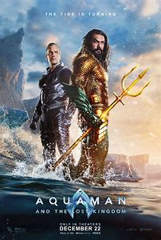

AQUAMAN AND THE LOST KINGDOM
Actors: Jason Momoa, Patrick Wilson, Amber Heard, Yahya Abdul-Mateen II, Nicole Kidman
Age Restriction: 13 L P PPS V
Showing Times: 15:00, 17:30, 20:00.
BRIEF SYNOPSIS
Four years after becoming king of Atlantis, Arthur Curry has married Mera and had a son, Arthur Jr., while splitting his life between land and sea. Meanwhile, David Kane / Black Manta continues to seek revenge against Arthur for his father's death, working with marine biologist Stephen Shin to find Atlantean artifacts. When Shin accidentally discovers a cavern in Antarctica, Manta finds a Black Trident that possesses him, its creator promising to give him the power to destroy Arthur. Five months later, Manta attacks Atlantis and breaks into its Orichalcum reserves to steal them to power his Atlantean machines that are ancient but are of unknown design to modern Atlanteans. They are caught midway and chased by Atlantean forces, with Mera injured in the ensuing battle. Arthur learns that this usage of Orichalcum, which emits high quantities of greenhouse gases, has not only raised planetary temperatures and caused extreme weather and ocean acidification but nearly caused a planetary extinction in the past when used by an ancient Atlantean kingdom. To learn where Manta is hiding, Arthur breaks his half-brother Orm out of prison, and they visit a pirate haven called the Sunken Citadel, meeting Kingfish to learn of Manta's whereabouts. The information they obtain leads them to a volcanic island in the South Pacific, where they battle Manta's forces after getting themselves through flora and fauna mutated by the Orichalcum. There, Orm comes into contact with the Black Trident, which shows him visions of its provenance. Orm learns the trident was created by Kordax, the brother of King Atlan and ruler of the lost kingdom of Necrus. Kordax was imprisoned with blood magic following a failed attempt to usurp the throne. Realizing the blood of any of Atlan's descendants could release Kordax; the pair learn that Manta has kidnapped Arthur Jr. The Atlanteans, with Shin's help, determine that Necrus' prison is located in Antarctica. In Necrus, Arthur fights Manta and is almost killed before Mera arrives and saves him. Manta throws the Black Trident at Mera, but Orm catches it before it strikes her. The spirit of Kordax leaves Manta for Orm, who proceeds to fight Arthur and uses Arthur's blood to free Kordax. Arthur convinces his brother to give up his hatred for him, allowing him to destroy both Kordax and the Black Trident. With Kordax's magic vanishing, Necrus starts to collapse. Manta refuses Arthur's help and allows himself to fall into a fissure. The Atlanteans and Shin escape to safety and decide that Orm has redeemed himself. They plan to inform Atlantis that Orm died on the condition that he remains hidden, vacating to the surface world. Believing the unification of the underwater kingdoms and the surface world is necessary to prevent further damage to the oceans, Arthur reveals Atlantis' existence through an announcement at the United Nations and declares his intentions of making the kingdom a member state.